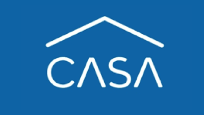

O que é o Selo DARASA?
O Selo DARASA representa o compromisso com o ativismo social digital no setor de videojogos, promovendo ações de doações, emprego inclusivo e voluntariado empresarial para impactar positivamente as causas sociais através dos jogos.
Projetos
Conheça os projetos que são parte integrante da nossa missão de contribuir para um mundo melhor através dos videojogos.
Com o Apoio de:


Contato
Entre em contato conosco para mais informações ou para se envolver.
As imagens e entidades mencionadas nesta página são apenas exemplos utilizados com propositos educacionais durante o tech4good IADE 2024. Para inquéritos ou remoção de conteúdo, por favor contacte-nos através do github: https://github.com/PetersenPt/DARASA